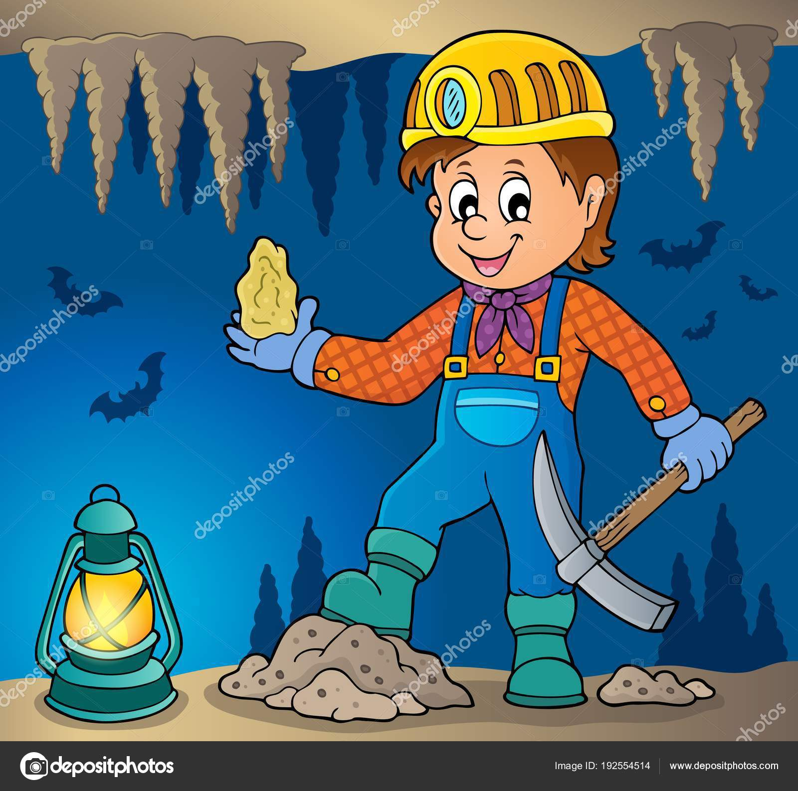
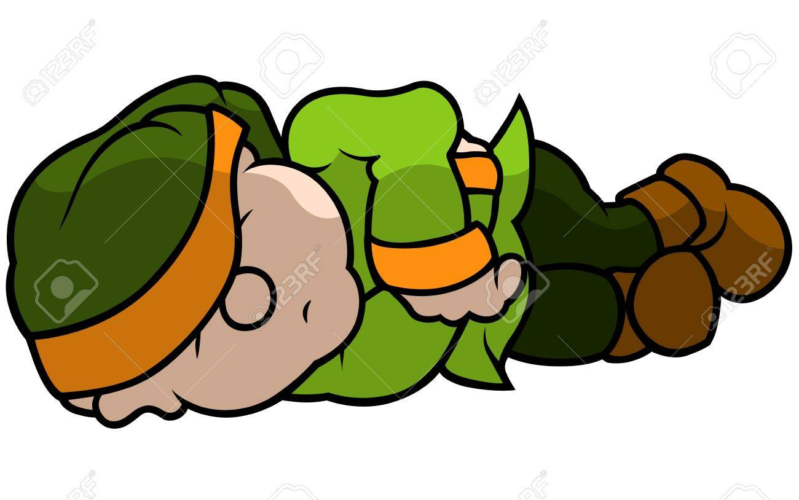

Steve estaba contento, entre mas picaba mas encontraba y como no le cabia en su bolsa, se dispuso a ponerlo
en el carrito de la mina que tenia mas materiales.
No solo encontro oro, tambien se encontro unos diamantes lo que ponia mas contento a nuestro minero que la
soñaba con regresar a casa y contarle a su familia.

Con el paso de las horas Steve seguia encontrando mas de su tesoro, pero con su bolsa y carro lleno no podia hacer mucho.
Cansado se fue a dormir para a la mañana siguiente irse a casa con su familia.